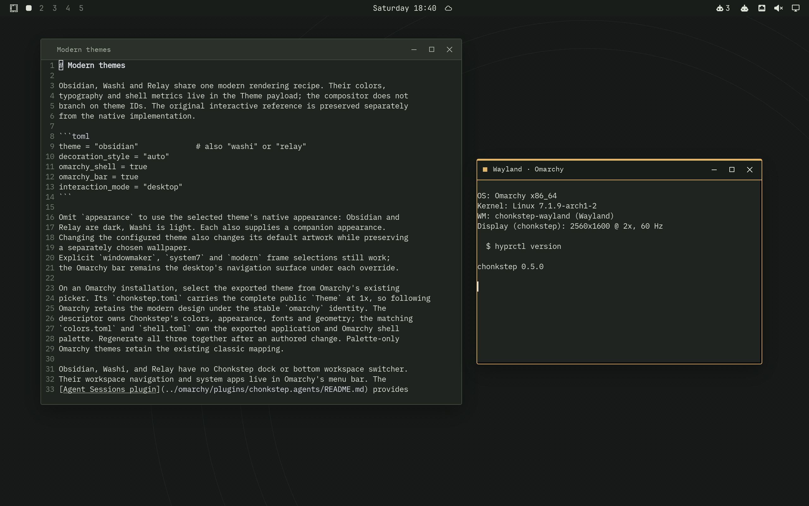
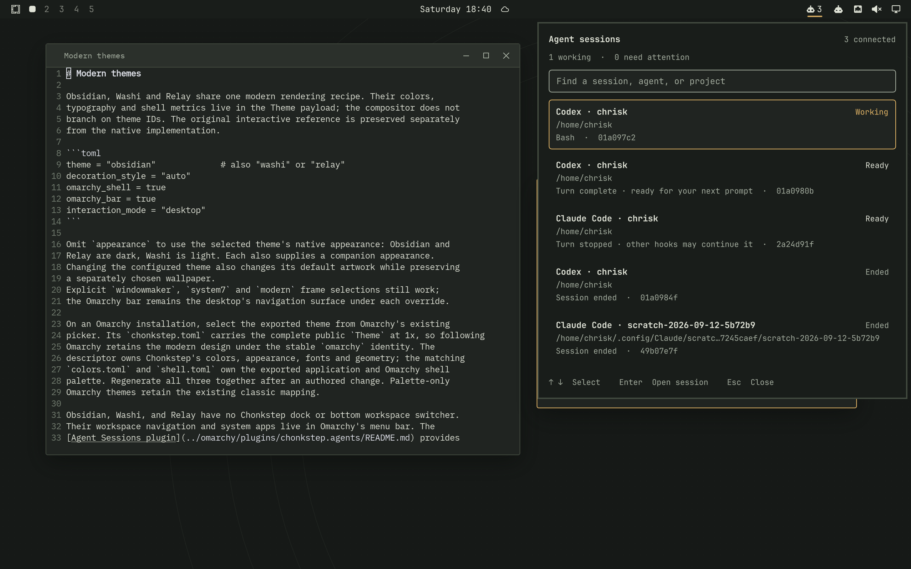
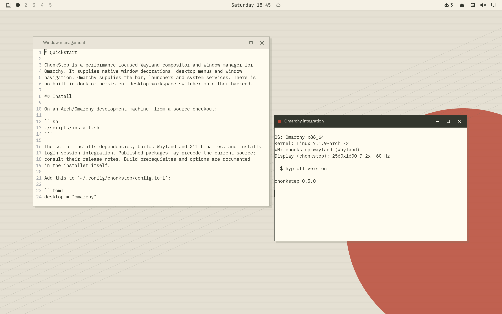
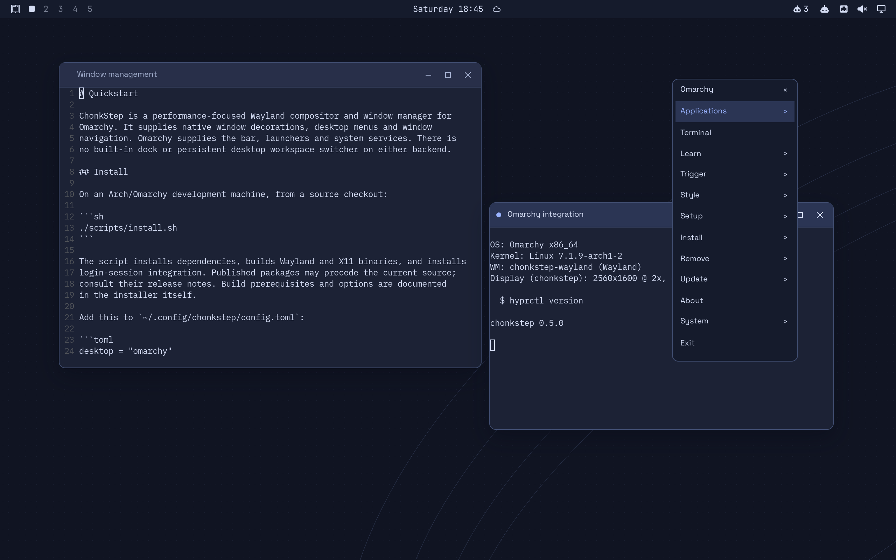
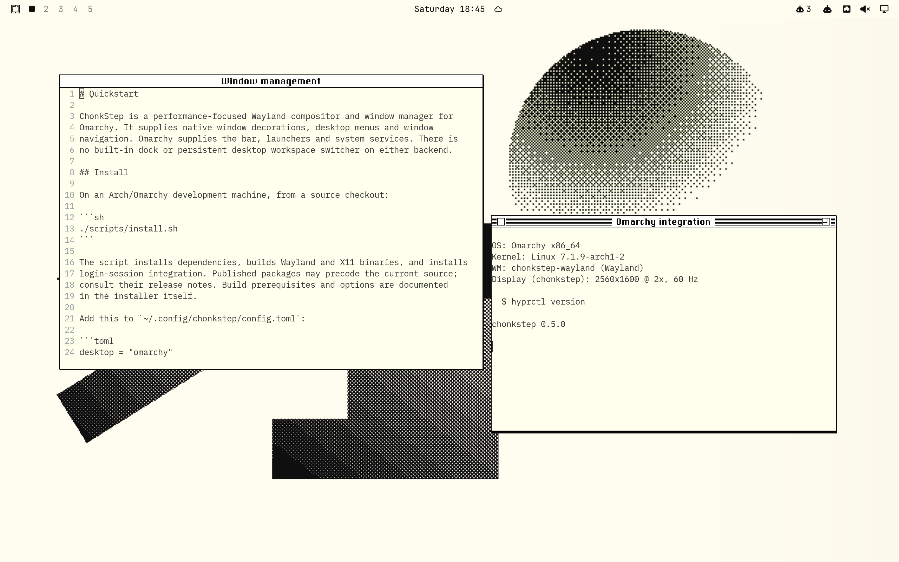
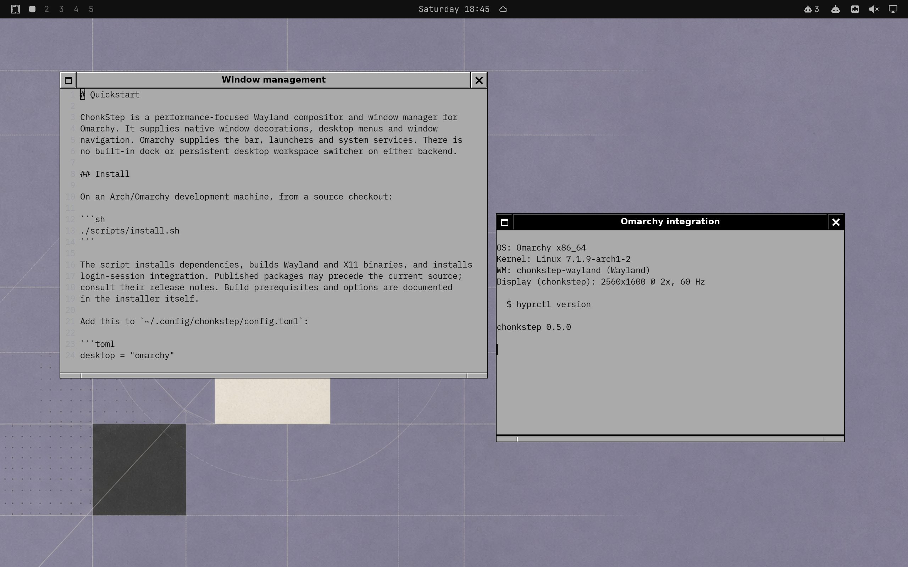

WAYLAND · RUST · OMARCHY
ChonkStep
A performance-focused compositor and window manager, built as a Hyprland drop-in for Omarchy. Keep your desktop services. Choose your windowing experience.
Installation and source · Performance evidence

Omarchy owns the desktop UI.
ChonkStep supplies responsive window management, native themes and desktop menus. The real Omarchy bar supplies workspace indicators, system panels and agent-session navigation. No dock or instrument platform runs inside the compositor.

Three modern themes.
Obsidian, Washi and Relay combine native decorations, themed menus and coordinated Omarchy palettes.


Performance is a design constraint.
Damage-driven rendering, cached resources, native GPU previews, bounded IPC and capture work, and a lean shell. Measurements include hardware, configuration and raw evidence. ChonkStep is alpha software; compatibility is documented command by command.
Retro is an appearance choice.
System 7 and NeXTSTEP decorations remain available. Wayland and Omarchy are the development focus; X11 is a secondary backend.

